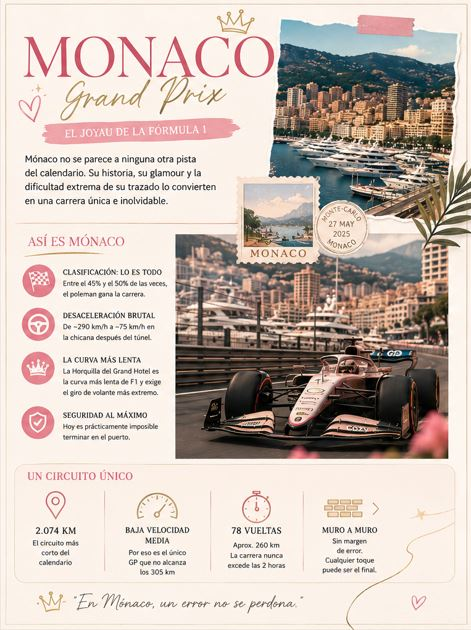

El Gran Premio de Monaco
Mónaco no se parece a ninguna otra pista del calendario, y sus números lo demuestran..
La clasificación representa prácticamente el 80% de la carrera. Debido a lo estrecho del circuito, adelantar es extremadamente difícil y remontar posiciones resulta casi imposible...
¿Por qué tener un creative corner?
Soy una persona que trabaja mucho y tiendo a estresarme con facilidad. Así que, para desestresarme, he aprendido a hacer de todo. Incluso me miento a mí misma diciendo: “esto lo haré para Emprender”.
Con esta dinámica que tengo actualmente, he pasado por muchas etapas creativas...

El caos de Canadá confirmó algo: la nueva generación ya llegó
Canadá nos dio uno de los fines de semana más caóticos e intensos de la temporada
Desde equipos reivindicándose, malas estrategias, problemas técnicos y penalizaciones por todos lados, el Circuit Gilles Villeneuve...

Round 5: Gran Premio de Canadá 2026
Estamos oficialmente en semana de carrera y eso solo puede significar una cosa: vuelve el caos controlado de Montreal. El Gran Premio de Canadá 2026 será el quinto round del campeonato y se disputará del 22 al 24 de mayo en el legendario Circuit Gilles-Villeneuve, uno de los trazados más rápidos, impredecibles...

LO QUE LA GENTE NO VE DE VIVIR CON ANSIEDAD
Hoy les vengo a contar una historia muy personal. Una historia que me define como persona en muchos sentidos, pero que al mismo tiempo siento que no define...

FORMULA 1 PARA PRINCIPIANTES (GLOSARIO)
Si eres nueva/o fan de la Formula 1 como yo, el siguiente paso es aprender su terminología y palabras claves...

EL PRIMERO DE MUCHOS
Soy de las personas que sienten que deben estar preparadas antes de empezar algo. Tal vez porque soy impulsiva… o porque pierdo la emoción muy rápido...